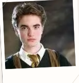

---------------------------------------------------------------------------------------"The most loyal and kindest school of all!"-----------------------------------------------------------------------------------------------
Cedric Diggory

Cedric Diggory, a gallant wizard of Hogwarts, is renowned for his exceptional skills in both Quidditch and magical prowess. A member of Hufflepuff House, he embodies the values of loyalty, hard work, and fair play. With his tousled dark hair and striking demeanor, Cedric carries himself with a blend of confidence and humility.
During the Triwizard Tournament, he emerges as a formidable competitor, showcasing not only his bravery in facing perilous challenges but also his chivalrous spirit as he forms an alliance with Harry Potter. His character serves as a beacon of honor, representing the very best qualities of a wizard—courage in the face of danger, a strong sense of justice, and unwavering loyalty to friends. Cedric’s legacy endures as a reminder of the importance of integrity and camaraderie in the magical world.
Cedric Diggory, a gallant wizard of Hogwarts, is renowned for his exceptional skills in both Quidditch and magical prowess. A member of Hufflepuff House, he embodies the values of loyalty, hard work, and fair play. With his tousled dark hair and striking demeanor, Cedric carries himself with a blend of confidence and humility.
During the Triwizard Tournament, he emerges as a formidable competitor, showcasing not only his bravery in facing perilous challenges but also his chivalrous spirit as he forms an alliance with Harry Potter. His character serves as a beacon of honor, representing the very best qualities of a wizard—courage in the face of danger, a strong sense of justice, and unwavering loyalty to friends. Cedric’s legacy endures as a reminder of the importance of integrity and camaraderie in the magical world.